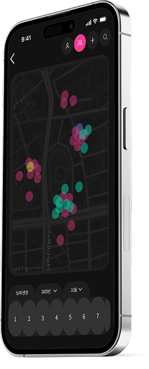
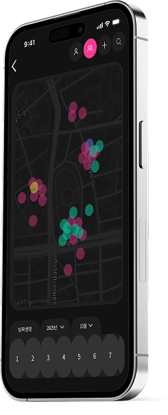
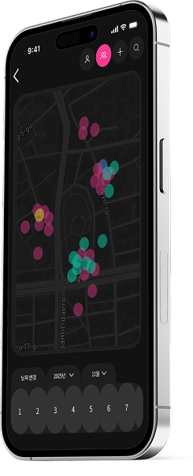
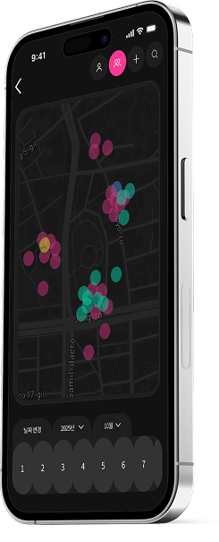
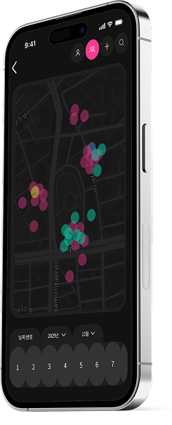
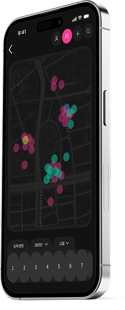

SNS는 이제 가공되고 연출된 이미지로 '멋진 나'를 보여주는 과시의 장이 되었습니다.
사람들은
서로를 이해하고 즐거움을 공유하기보다 서로의 팔로우와 좋아요 수를 비교하며 경쟁을 자처합니다.
이타심과 공동체적 즐거움은 커녕 진짜 교류는 점점 희미해지고, 우리는 삭막하고 외로운 공간을 마주합니다.
지도 위에 겹쳐진 개개인의 경험들,
즉 '같은 공간'을 경험해본 사람들이 자연스럽게 이어질 수 있다면 어떨까요?
겹쳐진 공간 속에서 이야기를 공유하고, 새로운 인연을 발견하고,
디지털을 넘어선 진짜 연결을 경험해보세요.
01
‘과시용 컨텐츠'가 아닌 ‘실제 순간'을 중심으로 기록합니다. 같은 경험을 함께한 사람들과 이를 공유합니다.
02
디지털 속의 표면적인 관계 대신, 같은 장소와 시간을 공유한 사람들 간의 진짜 유대가 생깁니다. 나와 같은 공간에 있는 사람들과의 대화, 추억이 새로운 공동체를 만듭니다.
03
좋아요와 팔로워를 의식하며 올리는 가짜 게시물에서 벗어나, 진짜 경험에서 비롯된 게시물이 됩니다. 서비스 속 리워드들이 사용자의 재미감을 더합니다.

같은 공간에서의 추억은 사람들을 자연스레 이어줍니다.
겹은 '장소'를 매개로 함께 기억되는 순간을 만듭니다.
지도 위에서 사람들의 인연, 공간, 그리고 경험이 겹쳐져
디지털을 넘어선 진짜 연결이 이루어집니다.

Helvetica neue LT Std
Noto sans KR
겹의 피드는 메인, 투데이, 친구 총 3가지 구성이며,
그 중 첫 번째 메인 피드는 사용자의 공간 기반 경험을 기록하고 공유하는 중심 화면입니다.
서비스 아이덴티티를 강하게 전달하기 위해 심볼 로고를 메인 상단에 배치하였습니다.
게시물들의 레이아웃은 주제인 '겹침'을 시각적으로 표현하도록 설계되었습니다.
하루 동안 ‘누구와 어디서 겹쳤는지’를 보여주는 페이지입니다.
실시간 위치 기반의 사회적 교차 경험을 데이터 시각화 형태로 전달합니다.
위치 기반 공유, 깊은 몰입감, 즉각적인 소통을 핵심으로 트렌디하고 개인화된 소셜미디어 경험을 제공합니다.
화면 상단의 프로필들은 현재 겹쳐 있는 친구들을 나타냅니다.
친구와의 소통을 지원하며, 깔끔한 다크 모드의 디자인으로 대화의 집중도를 높입니다.
사용자의 멀티태스킹 경혐을 고려해 채팅 중에도 앱의 주요 기능인 메인 피드, 카메라 등에 빠르게 접근할 수 있도록 설계하였습니다.
간결함을 유지하면서도 겹치는 횟수를 강조하여 친구 요청의 동기를 부여합니다.
또한, 앱의 다양한 이벤트 및 상황에 유연하게 대응할 수 있도록 디자인 하였습니다.
겹의 핵심 가치인 공간과 연결을 가능케 하는 페이지입니다.
다중 색상의 핀으로 ‘겹친' 사람과 빈도를 직관적으로 나타냅니다.
검색 필터를 통해 사용자가 찾고자 하는 장소의 기록들을 효율적으로
관리할 수 있는 유연한 인터페이스를 제공합니다.
지도 위의 원은 단순한 위치 표시가 아닌, 나와 타인과의 관계를 및 겹침의 빈도를 나타냅니다.
투명도 조절로 ‘겹친다'는 행위를 지도에 직관적으로 나타내며,
색상 분류를 통해 누구와 어디서 얼마나 겹쳤는지 쉽게 파악할 수 있습니다.
개인의 장소 경험을 기록하는 기능과
소셜 미디어에서의 공유 및 반응 기능을 결합했습니다.
게시물 작성 시에 집중도를 높이고, 게시 후에는 메인 컬러를 활용하여
좋아요, 저장 등을 직관적으로 보여주며
사용자 참여를 유도하는 구조입니다.
각 지역의 특징을 모티브로 디자인한 리워드뱃지를 통해 사용자들의 흥미와 참여도를 높입니다.

개인 기록 갤러리 및 소셜 활동의 역할을 수행합니다.
사용자는 마이페이지를 통해 자신의 콘텐츠를 효과적으로 관리하고, 뱃지 시스템을 통해 지속적인 동기를 부여받습니다.
영상
들어갈
부분